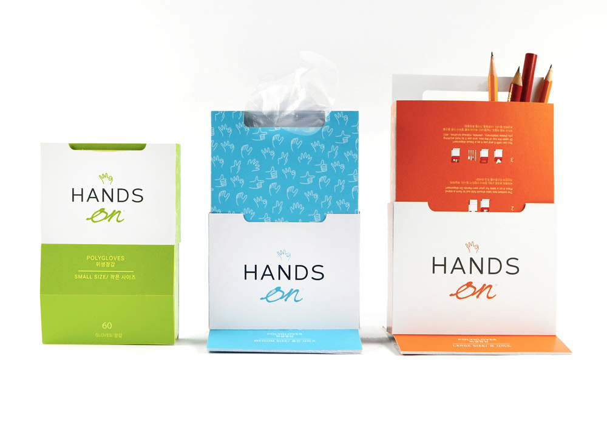

The Hands On Poly Gloves package relates to the composition of disposable poly gloves and a reusable dispenser for the packet for use in different environments. This innovative concept is directed to a unique glove dispenser system that includes a reusable external container (the holder-stand), and an internal container (the packet). This low cost reusable container-dispenser is rigid, and the eye-catching, bright-colour and simple patterns of Hands On are designed to imply cleanliness. The unique “slide-out” concept enables the package to be easily transformed into a freestanding glove dispenser. This dispenser can also be reverted into the original rectangular form for storage or travelling purposes. The packet contains a plurality of gloves in a stacked folded relationship with one another. Hands On is a user-friendly, sustainable package with extended lives. It’s refillable and reusable. The sturdy package can be converted into a desktop organizer for pens and pencils, plastic utensils for camping use, envelopes and etc. Poly gloves are very popular in South Korea and can be founded in the kitchen of every household. Hands On is aimed at a global market. The bilingual layout can be easily adopted for any two languages.
